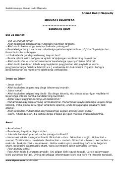

IIIslom dini asoslari, imon va ibodat qoidalari haqida savol-javob shaklidagi risola.
Mazkur kitob islom dinining asosiy hukmlari, imon, islom, amallar turlari (farz, vojib, sunnat va boshqalar) hamda ibodat tartiblarini savol-javob tarzida tushuntirib beradi. Asar musulmon kishi bilishi lozim bo'lgan kundalik diniy bilimlar va shariat qoidalarini o'rganish uchun mo'ljallangan.